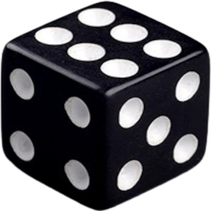
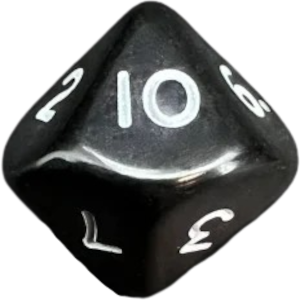
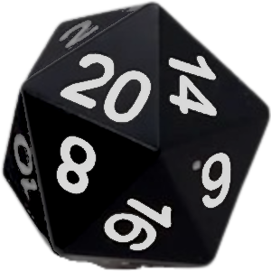

Players describe what their characters do. The GM advises when their action is impossible, demands a cost or extra steps, or presents a risk. Players can revise plans before committing so as to change goal/stakes. Only roll to avoid risk.
Roll a skill die — d6 by default, higher with a relevant skill, or d4 if hindered by injury or circumstances. If helped by circumstances, roll an extra d6; if helped by an ally, they roll their skill die and share the risk. Take the highest die.
If success can't get you what you want, you'll at least get useful info or set up an advantage.
Carry as much as makes sense, but more than one bulky item may hinder you at times.
After a job, each character increases a skill (none⮕d8⮕d10⮕d12) and gains d6 credits (₡).
Say how one of your items breaks to turn a hit into a brief hindrance. Broken gear is useless until repaired.
Injuries take time and/or medical attention to heal. If killed, make a new character to introduce ASAP. Favor inclusion over realism.
Describe characters in terms of behaviors, risks, and obstacles, not skill dice. Lead the group in setting lines not to cross in play. Fast-forward, pause, or rewind/redo for pacing and safety; invite players to do likewise. Present dilemmas you don’t know how to solve. Move spotlight to give all time to shine. Test as needed for bad luck (e.g., run out of ammo, or into guards) — roll a die to check for (1– 2) trouble or (3–4) signs of it. Improvise rulings to cover gaps in rules; on a break, revise unsatisfactory rulings as a group.
Name, Role, Skills, Abilities, Gear, 3 Strikes
Modifiers: -1 less favorable, +1 more favorable
Now, consider adding an additional complication, such as a countdown, limitation, resistance, or distraction.
| Heads / Even | Yes | A | High(er) | More Favorable / Fortunately... |
|---|---|---|---|---|
| Tails / Odd | No | B | Low(er) | Less Favorable / Unfortunately... |
Choose two subjects that your character is really interested in or thinks is cool, and could talk about all day, like monster movies, comic books, music, chemistry, soccer, astronomy, or sewing. When you roll and can describe how one of your interests might help you, add +1.
What problems do they create for themselves and you? What demands or duties do they commit you to?
This could be bikes, skateboards, scooters, or anything else that would make sense for kids to have in your world. They might all be the same in your group, or they could be different for each of you. Describe your transport and what makes it unique.
These should be something that the characters are interested in finding out more about, like a rumour about someone new in town, pets disappearing, or strange creatures in the woods.
This might be a specific animal, a feeling (sadness, rejection), the dark, a specific person, or a place. Decide how they react when they are confronted with their fear.
Your hideout might be in someone's bedroom or basement, a treehouse, a fort in the woods, a cave system, an abandoned cabin, or anything else you can think of that no one else but you uses. Choose up to three boons and at least two drawbacks.
Whenever you want to do something risky, roll 2d6, plus any modifiers you may have. ● A 2-6 is a failure. The player describes what goes wrong and the GM describes how things get worse somehow. ● A 7-9 is a partial success or a success with a complication. You barely succeed and the GM will give you a cost or a complication. If you don't wish to accept the cost or complication, you can choose to fail instead. ● A 10-12 is a full success. You do what you want and do it well. ● A 13+ is a critical success. The GM offers you +1d6 on your next roll or some other extra benefit. Main themes of the game are friendship, teamwork, exploration, discovery, secrecy, communication, and the fear of growing up. When a character wants to help another character to add +1 to their roll, that character must speak on one of these themes in character along with explaining how their character helps. Only one +1 can be added no matter how many people help (unless the leader is helping, in which case +2 is added).
| / | 1 | 2 | 3 |
| 1 | begin / enemy | charge / strategy | aid / dream |
| 2 | depart / rival | destroy / religion | arrive / power |
| 3 | finish / price | endure / problem | change / quest |
| 4 | refuse / bond | escalate / home | debate / wealth |
| 5 | restore / spirit | impress / path | defy / war |
| 6 | search / truth | reduce / pride | demand / loss |
| / | 4 | 5 | 6 |
| 1 | acquire / blood | follow / vow | attack / land |
| 2 | capture / peace | hunt / ally | betray / nature |
| 3 | distract / tool | locate / greed | hide / duty |
| 4 | journey / debt | reveal / disease | scheme / trade |
| 5 | learn / family | share / hope | secure / rumor |
| 6 | take / fear | support / death | swear / risk |
Shenanigans: 💀 Disasterous -- D20 -- Sensational ⭐
Spellcast: 💀 Mutation -- D12 -- Godlike ⭐
Defend: 💀 Crippled -- D10 -- Counter ⭐
Attack: 💀 Breakage -- D8 -- K.O. ⭐
Explore: 💀 Encounter -- D6 -- Goal ⭐
Rest: 💀 Countdown -- D4 -- Recover ⭐
Save: 💀 Die -- D2 -- Live ⭐
Honor the consequences of 💀 and ⭐
Adjudicate based on fictional positioning
Be with principles & possessions
An identity + 2d6 health + a pack of 1d6 items
Explore: Bust <-- 1d6 --> Boon
Encounter: Dangeous <-- 2d6 --> Delightful
Execute: Poorly <-- 3d6 --> Perfectly
Communte to regain health
Attack to do d6 damage
Expend when busted
| D6 | Action | Focus |
|---|---|---|
| 1 | strengthen / mend | weapons / tools / items |
| 2 | weaken / damage | mind / senses |
| 3 | transform | elements |
| 4 | learn / detect | animal / plant |
| 5 | summon / create | food / medicine |
| 6 | choose any action | choose any focus |